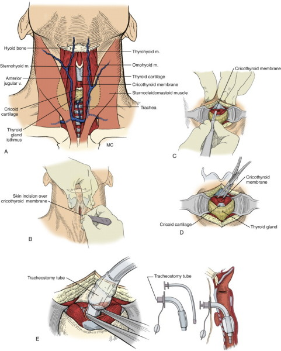

Caution
Not recommended for children under 12.
1. Place pt supine, neck neutral.
- stand on pt's right
2. Surgically prep area and locally anaesthetise it if conscious.
- palpate thyroid notch and cricithyroid interval and sternal notch
for orientation.
3. Stabilise thyroid cartilage with left hand, maintain until
intubated.
4. Make a vertical skin incision
- vertical better because avoids anterior jugular, good exposure
with lateral retraction
- rapid blunt dissection down to membrane.
- suction is useful if available
- incise through membrane carefully and transversely.
- do not cut or remove
supporting cricoid / thyroid cartilages (risk especially in
children).
Keep close to top of cricothyroid as arterial branches enter high
into the membrane in some
5. Insert scalpel handle and rotate 90o to open airway.
- or a pair of artery forceps in each direction; tracheostomy hook
would be ideal.
- views are often suboptimal making it as much looks as feel.
6. Insert appropriate sized ET tube (cuffed, usually 6 for adults, 3
for children)
- (or tracheostomy tube)
7. Inflate and ventilate.
8. Observe lung inflations and auscultate.
- detect CO2
9. Secure the tube.
- be aware that the tube
could easily slip down into the bronchus

lo\
Complications
1. Aspiration (blood)
2. False passage creation
3. Subglottic stenosis / oedema
4. Laryngeal stenosis
5. Haemorrhage or haematoma formation
6. Laceration of oesophagus
7. Laceration of the trachea
8. Mediastinal emphysema
9. Vocal cord paralysis.